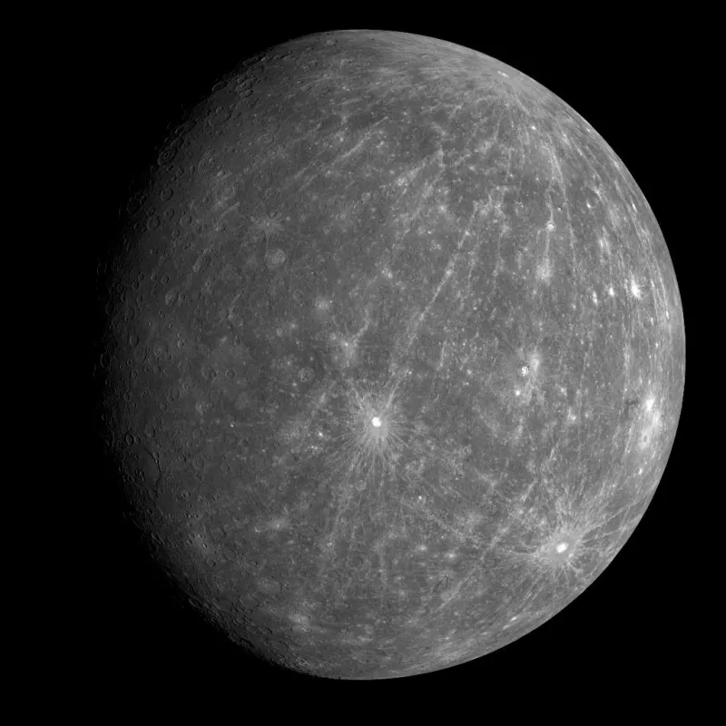
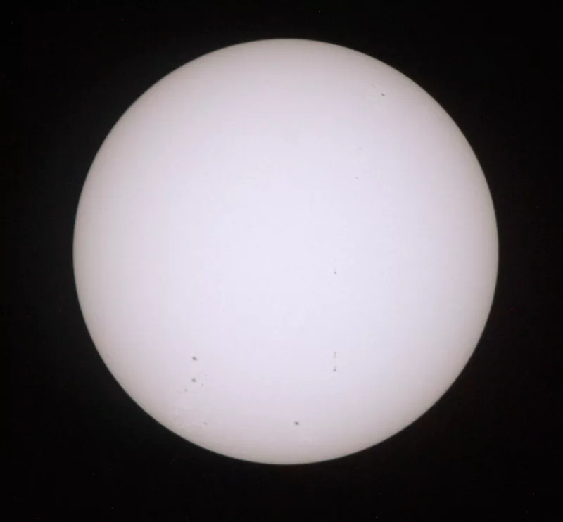
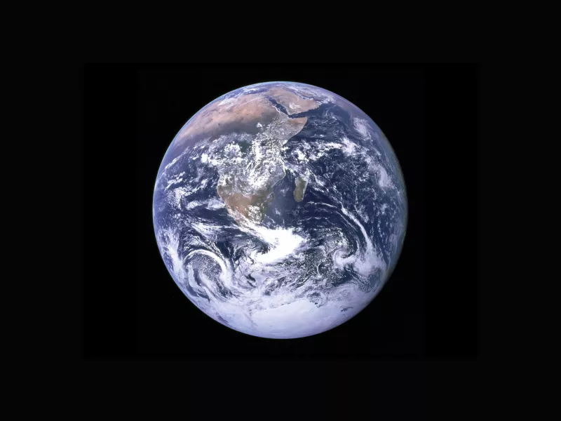
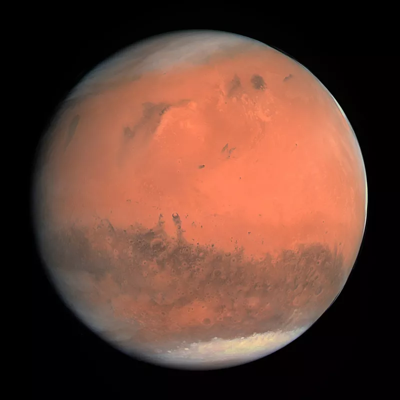
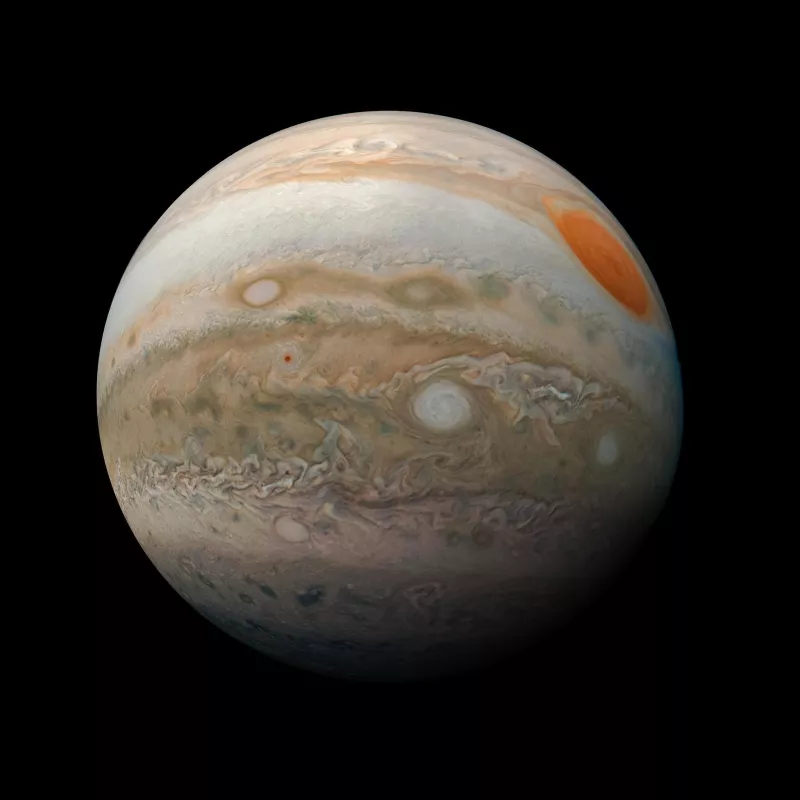
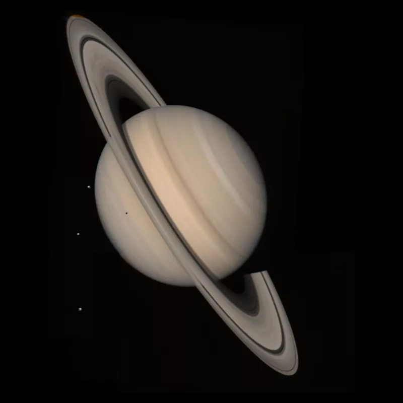
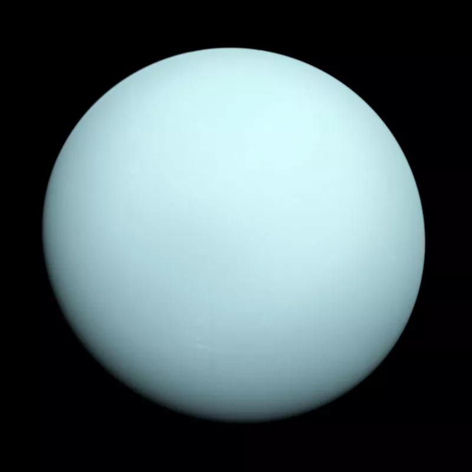
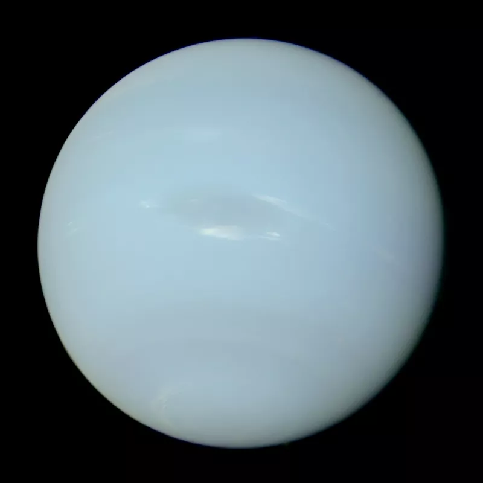

Mercure

Trois fois plus petite que la Terre en diamètre, Mercure est la
planète la plus proche du Soleil, à "seulement" 50 millions de
kilomètres de ce dernier. Mercure met 88 jours à faire le tour du
Soleil. Cette planète est tellurique, c’est-à-dire qu’elle est
essentiellement composée de roches et de métaux. Sa forte densité
suggère qu’un impact géant l’a dépouillée d’une partie de son
manteau rocheux, lui laissant un noyau métallique disproportionné.
Par ailleurs, elle n’a aucun satellite naturel. Mercure ne possède
pas d’atmosphère notable, ce qui la rend particulièrement sujette
aux bombardements de météorites, et qui explique la présence de
cratères qui ne subissent pas d’érosion à sa surface. Sans
atmosphère pour réguler les températures entre les parties
éclairées et non éclairées par le Soleil, ces températures peuvent
varier entre - 180 °C à presque 430 °C.
Vénus
Vénus est la deuxième planète la plus proche du Soleil. Sa taille
et sa période de révolution sont proches de celles de la Terre.
Cette planète tellurique a la particularité de tourner sur
elle-même dans le sens inverse des autres planètes (vue du Nord,
elle tourne dans le sens des aiguilles d’une montre), ce qui fait
que le soleil s’y lève à l’ouest et se couche à l’est. On dit que
sa rotation est "rétrograde". Son atmosphère, très dense, est
composée presque intégralement de dioxyde de carbone (CO2). La
pression à sa surface y est très forte : plus de 90 fois
supérieure à celle sur Terre ! L’effet de serre y maintient des
températures autour de 470 °C, une chaleur suffisante pour faire
fondre le zinc. Cela fait d’elle la planète la plus chaude du
Système solaire.

Terre

La Terre est la troisième planète la plus proche du Soleil. C’est
aussi la planète tellurique la plus grosse et la plus dense du
Système solaire. La forme de la Terre n’est pas parfaitement
sphérique : elle est aplatie aux deux pôles par l’effet de sa
rotation. Deux tiers de la surface terrestre sont recouverts d’eau
(peut-être apportée par des astéroïdes carbonés vers la fin de son
accrétion), ce qui explique son surnom de "planète bleue" !
L’abondance de sa forme liquide a joué un rôle majeur dans le
développement de la vie sur Terre. La Terre possède un satellite
naturel, la Lune, possiblement apparue après une collision avec
une autre protoplanète dans sa première centaine de millions
d’années d’existence !
Mars
Mars est la quatrième planète la plus proche du Soleil. Elle est
neuf fois moins massive que la Terre, car sa zone était appauvrie
en solides lors de sa formation. Avec une durée du jour proche de
la nôtre, Mars a une atmosphère ténue de dioxyde de carbone qui
précipite périodiquement sur les calottes glaciaires des pôles,
mais aussi des nuages ! On trouve parfois à sa surface des
tempêtes emportant énormément de poussière riche en oxyde de fer
sur leur chemin. Cette poussière omniprésente donne à l’air
martien une couleur rouge remarquable qui lui a valu son surnom de
"planète rouge". Les conditions martiennes sont inhospitalières,
mais son atmosphère a été plus dense il y a 4 milliards d’années,
et de l’eau liquide semble même avoir circulé à la surface.

Jupiter

Cinquième planète la plus proche du Soleil, Jupiter est une géante
gazeuse. C’est la plus grande planète du Système solaire, avec un
rayon mesurant 11 fois celui de la Terre, pour 318 fois sa masse !
Lors de sa formation, elle a pu capter du gaz du disque
protoplanétaire primordial, qui était cent fois plus abondant que
la poussière. Son noyau solide, représentant peut-être une dizaine
de masses terrestres, est enfouie dans une épaisse atmosphère.
Celle-ci est marquée par sa "Grande Tache Rouge", une gigantesque
tempête qui tourbillonne depuis les débuts des observations
télescopiques, il y a plusieurs siècles. Cette tache seule est
déjà plus grande que la Terre ! À la "surface" de la planète (à un
niveau d’altitude où la pression est égale à celle au niveau de la
mer sur Terre), il fait – 145 °C sur Jupiter.
Saturne
Saturne est la sixième planète la plus proche du Soleil. Géante
gazeuse, elle est plus petite que Jupiter. Elle est
particulièrement connue pour ses anneaux, s’étendant à presque 300
000 km de la planète, pour une épaisseur d’une dizaine de mètres.
Ils sont formés de débris de roches et de glace, pouvant atteindre
la taille d’un poing ou d’un camion. Ces débris seraient issus de
satellites désintégrés. Comme pour Jupiter, le temps d’une
rotation est bien court sur Saturne : il suffit de 10 h 30 pour
que s’y passe une journée. En revanche, son année (révolution
autour du Soleil) prend presque 30 années terrestres. Et pour
finir, le méthane, qui aux températures frigorifiques régnantes
(autour de - 180 °C) peut être gazeux, liquide ou solide, y
connaît un cycle comparable au cycle de l’eau sur Terre.

Uranus

Uranus est la 7e planète en partant du Soleil, elle est plus
petite que Saturne, mais reste au moins 4 fois plus grande que la
Terre. C’est une géante glacée, composée d’hydrogène, d’hélium, de
méthane et d’un peu d’ammoniac. Contrairement aux planètes plus
proches, Uranus n’était pas connue dans l’Antiquité, mais a été
découverte en 1781 par William Herschel. Uranus se démarque par un
axe de rotation presque couché sur son plan orbital. Cela signifie
que ses pôles sont alternativement plongés dans l’obscurité ou la
lumière durant des années… Ses anneaux, difficiles à observer et
situés dans son plan équatorial, sont ainsi sensiblement
perpendiculaires au plan de l’orbite.
Neptune
Huitième planète en partant du Soleil, la plus éloignée que l’on
connaisse pour le moment, elle a été découverte par le calcul par
Le Verrier et Adams, sur la base des perturbations de l’orbite
d’Uranus, comme l’a confirmé l’observation en 1846. Neptune est
aussi une géante de glace. Comme les autres planètes géantes,
Neptune n’a pas de surface solide. Possédant du méthane dans son
atmosphère, elle a la même teinte verdâtre qu’Uranus
(contrairement à la couleur bleu profond qu’on lui attribuait
auparavant). Une grande tache sombre, aussi grande que la Terre,
se démarque à sa surface. Cette planète est balayée par les vents
les plus rapides du Système solaire, certains pouvant pousser des
nuages à 2 000 km/h !
